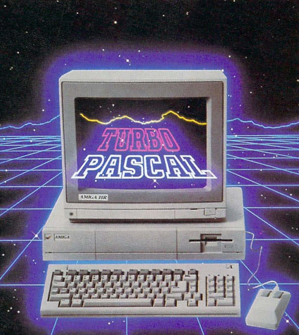

Nerdbook è un servizio di rete sociale lanciato il 15 marzo 2015, ed è posseduto e gestito dalla società Nerdbook s.p.a., basato su una piattaforma software scritta in vari linguaggi di programmazione. Il sito, fondato a Cagliari in Italia da Caio Sempronio, Mario Rossi, Pasquale Bianchi e Lello Ortu, era originariamente stato progettato esclusivamente per gli studenti dell'Università di Cagliari, ma fu presto aperto anche agli studenti di altre scuole della zona di Cagliari.
Nato inizialmente come Blog per la condivisione di interessi si è presto tramutato in un social network grazie ai tanti utenti che settimanalmente si recavano a commentare sul blog.
Per il futuro speriamo di raccogliere utenti da ogni parte del mondo, in modo da poter condividere la nostra filosofia con pi๠persone possibili
Nerdbook è un servizio di rete sociale lanciato il 15 marzo 2015, ed è posseduto e gestito dalla società Nerdbook s.p.a., basato su una piattaforma software scritta in vari linguaggi di programmazione. Il sito, fondato a Cagliari in Italia da Caio Sempronio, Mario Rossi, Pasquale Bianchi e Lello Ortu, era originariamente stato progettato esclusivamente per gli studenti dell'Università di Cagliari, ma fu presto aperto anche agli studenti di altre scuole della zona di Cagliari.